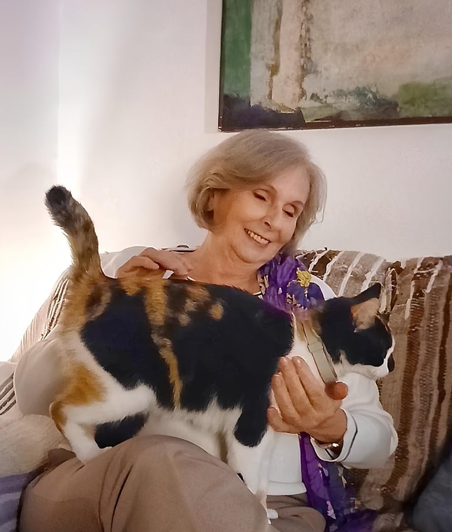

Olá, sou Elizabet Lautert
Psicóloga clínica, do trabalho e facilitadora de grupos terapêuticos
Doutora em Ciências (USP), com especialização em Saúde e Trabalho (HC-FMUSP), atuo há mais de 20 anos no cuidado da saúde emocional de adultos em contextos profissionais exigentes. Além de psicóloga clínica, sou pesquisadora e atuante na área de humanização na saúde, professora universitária e palestrante, unindo escuta qualificada e prática para promover equilíbrio e fortalecimento psíquico em tempos de transição e alta demanda.

Psicóloga clínica e do trabalho, com sólida experiência em saúde mental no contexto profissional. Atendo adultos — especialmente profissionais liberais, gestores e executivos — que enfrentam conflitos emocionais ligados ao trabalho e à vida pessoal.
Minha prática é fundamentada na psicodinâmica, abordagem que busca compreender a origem dos seus padrões e conflitos, promovendo transformações duradouras. Ao longo dos atendimentos, criamos um espaço de escuta ética e estratégica, para que você possa acessar seus recursos internos, fortalecer sua autonomia e agir com mais clareza.
Além dos atendimentos individuais, também conduzo grupos terapêuticos sob enfoque psicossocial, voltados ao compartilhamento de experiências e à promoção de saúde mental no ambiente de trabalho.
Minha formação une experiência clínica, atuação institucional e trajetória acadêmica consolidada:
- Doutora em Ciências (IP-USP);
- Mestre em Educação (Uninove);
- Especialista em Saúde e Trabalho (HC-FMUSP);
- Psicóloga do trabalho no Hospital das Clínicas - FMUSP, onde atuei na criação e coordenação do Programa de Atendimento ao Servidor Dependente (PROSEDE);
- Professora universitária;
- Supervisora de estágios de alunos de psicologia em instituições educacionais, médicas e organizacionais;
- Pesquisa e atuação na área de formação médica e humanização na saúde.
Minha escuta é técnica, sensível e comprometida com a singularidade de cada pessoa.
Formação e experiência
Residência em Saúde e Trabalho pela Faculdade de Medicina da Universidade de São Paulo, FM-USP. Mestre em Educação, Universidade Nove de Julho, Doutora em Ciências, Instituto de Psicologia, Universidade de São Paulo, IP-USP.
Psicóloga Clínica e do Trabalho. Aprimoramento em Psicologia do Trabalho com o desenvolvimento de projeto de Aconselhamento Profissional na Clínica Escola da USJT, conduzindo o projeto piloto com alunos do quinto ano no atendimento à comunidade.
Professora de Ensino Superior, curso de Psicologia, Professora de Pós-Graduação, área de Educação: Formação de Docentes para Educação Profissional - Metodologia de Desenvolvimento de Competências, Centro Universitário SENAC-São Paulo.
Docente nas áreas de: Aportes Técnicos para a Atuação Profissional do Psicólogo - Bases Filosóficas e Epistemológicas da Psicologia - História da Psicologia - Psicologia, Saúde e Trabalho - Psicologia Social e Trabalho - Desenvolvimento Social e Qualificação Profissional, coordenadora de Grupos de Estudos.
Supervisora de estágios clínicos e estágios institucionais em fundações e organizações. Supervisora de estágio em instituições educacionais e sociais, para público em situação de vulnerabilidade.
Psicóloga do trabalho do Serviço de Saúde Ocupacional do Hospital das Clínicas - FMUSP.
Doutora pelo IP-USP, Mestre em Educação pela Uninove e Especialista em Saúde e Trabalho pelo HC-FMUSP.
